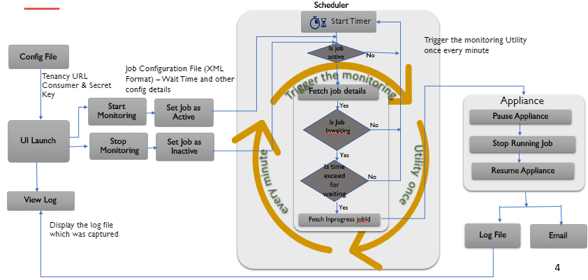
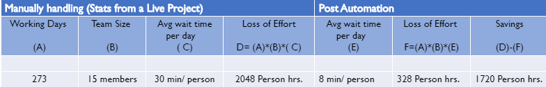
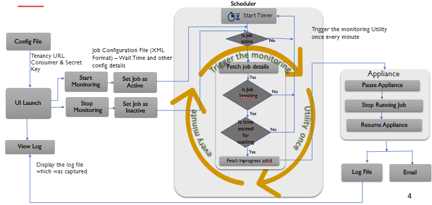

Launch

Help addressing Dev and QA effort leakages because of the “wait”
Statistics from a Live project is shared below:

JDk need to installed
Windows Task sheduler need to set with highest privilages
Xammp Need to be installed.
Oauth.dll need to be dropped in "C:\xampp\php\ext" with same version of xammp.
If the task scheduler is stopped you need to restart the whole utility.
Smartcomm Appliance need to be in running state and connected to our tenancy.
Task scheduler time should not be set in seconds.
SmartCOMM Appliance Restart Utility

Prerequires for the demo: Before the demo we have at least one job In Progress (for more than 5 minutes) and few in waiting
- We take the audience through the front-end screen to explain how to configure the utility
- For the demo purpose, we will configure our na4 tenancy (can be accessed from any network) set with 3 minutes wait policy
- Once we configure and run the job, the utility will stop the “In Progress” job and resume the Appliance which will run the jobs in waiting
- The details of the job, which was stopped, can be viewed in the log
- We will walk them through the main code for a high-level understanding (only if there are technical staff)
- The Demo time is approximately 30 min